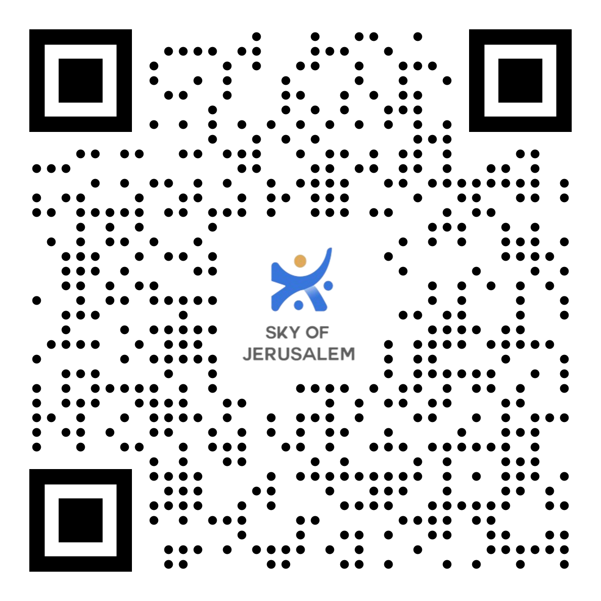

✨ Sky Of Jerusalem ✨
شركة مقدسية نسائية تعمل على تقديم الخدمات اللامنهجية والعلاجية الترفيهيه ، بالاضافة الى برامج التأهيل المهني ، ومخيمات صيفية وجولات منظمة . وتتميز الشركة بأنها مكونة من مجموعة من الاخصائيات الاجتماعية العاملات بالميدان في منطقة القدس بالتعاون مع المؤسسات التربوية والعلاجية في المدينة .
✨ برامجنا المنهجية ✨


 עברית
עברית العربية
العربية